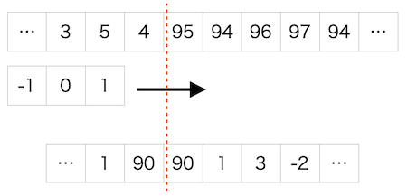
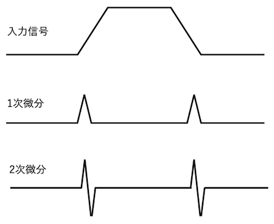
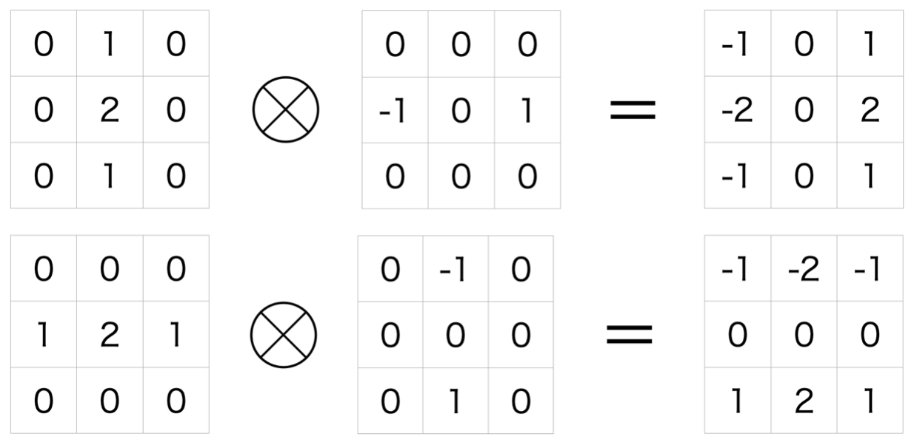
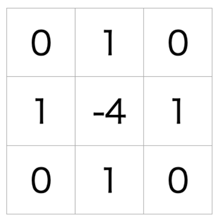
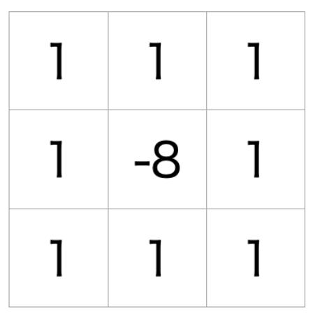
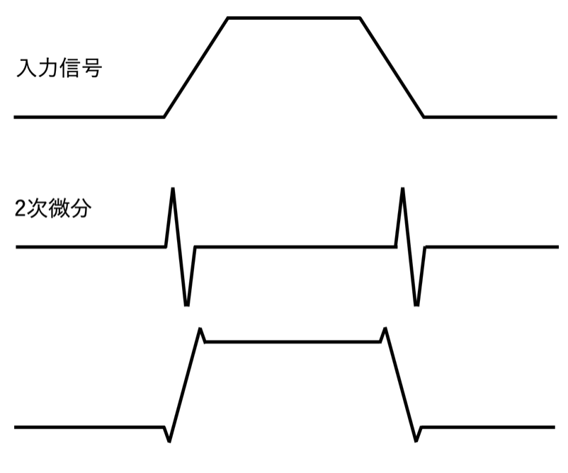
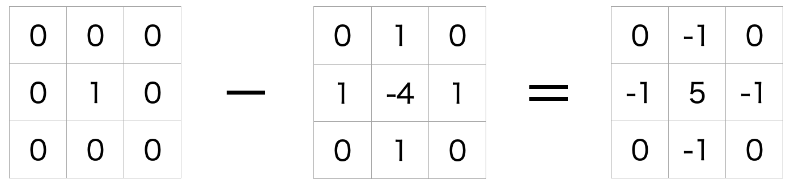

エッジ抽出
エッジの抽出は画像の特徴抽出のための最も基本的な処理の一つだといえる。
最も基本的なアイデアは空間微分により検出するというものだ。エッジは濃淡変化の大きな部分であるので、1次元信号のある点での傾きが大きければエッジと判断できる。
1次微分
- $\nabla I(x,y) = \Big( \frac{\partial I}{\partial x},\frac{\partial I}{\partial y}\Big)$
- 離散的な1次微分の処理自体は単純には差分を取ることである。Fig1のようになる。
- 問題点：ノイズに敏感に反応してしまいノイズとエッジの区別がつかなくなること。
- 解決法：平滑化した後にエッジ抽出をする。
- 例）ソーベルフィルタ
2次微分
- $\nabla^2 I(x,y) = \Big( \frac{\partial^2 I}{\partial x^2},\frac{\partial^2 I}{\partial y^2}\Big)$
- Fig2のようになる。
- エッジ箇所はゼロと交差する部分。
- 例）ラプラシアンフィルタ
ソーベルフィルタ
- 加重平均で平滑化しつつ1次微分するフィルタの1つ。
- 垂直方向と水平方向の2種類を紹介する。
- それぞれの方向の加重平均カーネル(非正規化)と1次微分するカーネルを掛け合わせたもの。
ラプラシアンフィルタ
- Fig4に水平・垂直それぞれの方向への2次微分のカーネルを示す。
- 水平・垂直を足し合わせたものがFig5の4近傍のラプラシアンフィルタである。
- 水平・垂直・斜め方向を足し合わせたものがFig6の8近傍のラプラシアンフィルタである。
- 問題点：微分するほどノイズが強調されてしまう。
LoGフィルタ
- ラプラシアンフィルタのノイズ強調の解決策。
- 前処理としてガウシアンフィルタでノイズを抑制し、その後ラプラシアンフィルタでエッジを抽出する
- $L(x,y) = \frac{\partial^2}{\partial x^2}G(x,y) + \frac{\partial^2}{\partial y^2}G(x,y)=\Big(\frac{1}{2\pi\sigma^2}\Big)^2 \frac{x^2+y^2-2\sigma^2}{\sigma^4}\exp\Big(-\frac{x^2+y^2}{2\sigma^2}\Big)$
- $\nabla^2[G(x,y)*I(x,y)]=[\nabla^2G(x,y)]*I(x,y)=L(x,y)*I(x,y)$
- 入力画像：$I(x,y)$
- LoG：$L(x,y)$
- 2次微分：$\nabla^2 = \Big( \frac{\partial^2}{\partial x^2},\frac{\partial^2}{\partial y^2}\Big)$
- ガウシアンフィルタ：$G(x,y)=\frac{1}{2\pi\sigma^2}\exp\Big(-\frac{x^2+y^2}{2\sigma^2}\Big)$
- 人間の網膜でもLoGと同じような処理がされていることが知られている。
エッジ強調
- 画像を鮮明にすることができる。
- Fig7, Fig8 のように、入力信号から抽出したエッジをひくことで実現する。

Fig1. 1次微分の図解 画素の差分を取る

Fig2. 入力信号を微分することの図解

Fig3. 平滑化と1次微分の掛け合わせの図解
Fig4. 2次微分の図解

Fig5. ラプラシアンフィルタ(4近傍)

Fig6. ラプラシアンフィルタ(8近傍)

Fig7. エッジの強調の図解。入力信号からエッジを引く。

Fig8. エッジ強調のカーネルの図解
© 2022, Tomoya Onuki.